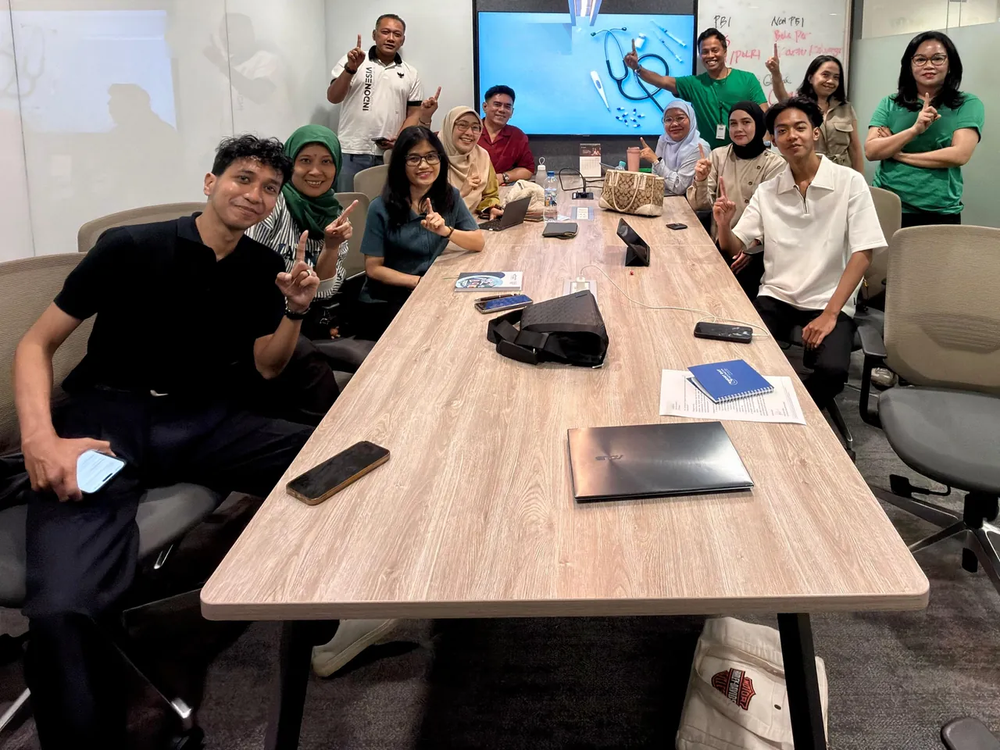
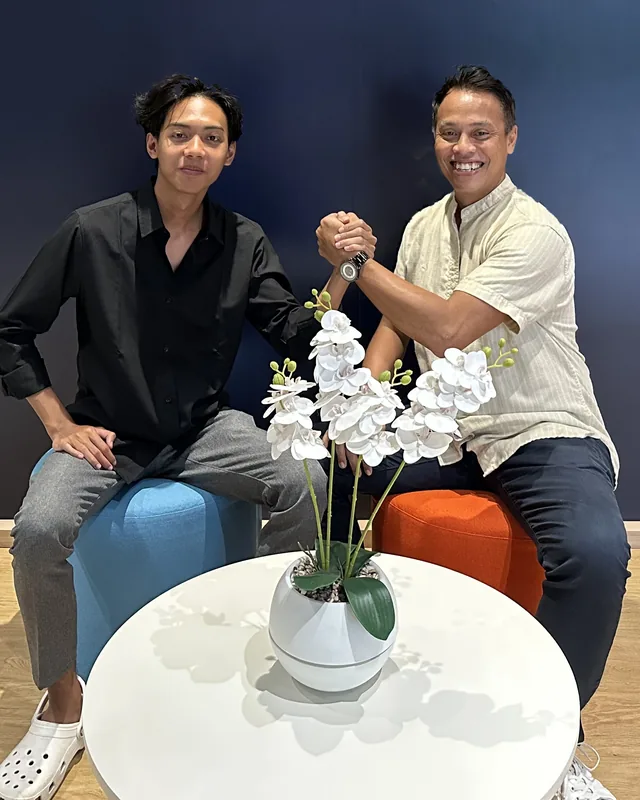

Milestones Along the Way
A glimpse of my professional journey as an insurance consultant: meetings, visits, and training sessions.

Moments From My Work
Meetings, visits, and training sessions along the way.


What My Clients Say
Impressions from clients who have discussed and consulted with me.

“The service was excellent and the communication open. I felt comfortable because every need was explained in detail, so I understood how important this insurance protection is.”

“I truly appreciate the service provided. Not only professional, but also friendly and responsive. I'm glad to work with a team that genuinely pays attention to its clients' needs.”

“For me, a good working experience isn't only about the product, but also about building a relationship and trust. I felt valued and received satisfying service.”

“The consultation was very informative and helped me understand the different protection options. I feel more confident planning and preparing for the future.”
Ready to Discuss Your Protection Plan?
There’s no obligation to buy. Tell me about your needs, and I’ll help explain the options available.